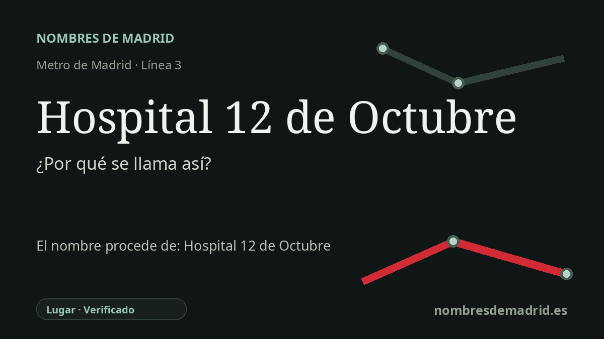

Publicado el · Investigación de Nombres de Madrid · Cómo verificamos cada origen · 8 fuentes consultadas
Respuesta rápida
La estación Hospital 12 de Octubre lleva el nombre del gran hospital público situado junto a ella en Usera. El hospital abrió en 1973 como Ciudad Sanitaria 1º de Octubre y más tarde adoptó el nombre 12 de Octubre, asociado a la Fiesta Nacional de España en lugar de al aniversario franquista del 1 de octubre.
La historia del nombre
La estación Hospital 12 de Octubre toma su nombre del hospital al que da servicio. La parada pertenece a la línea 3 y se sitúa en la Glorieta de Málaga, junto a la avenida de Córdoba, al lado de uno de los grandes campus hospitalarios públicos del sur de Madrid. La página de la Comunidad de Madrid sobre la ampliación de la línea 3 describe la estación como situada junto al Hospital 12 de Octubre, y el Consorcio Regional de Transportes la recoge con ese nombre dentro de la línea 3.
El nombre que hay detrás de la estación es anterior al Metro. El hospital se inauguró el 2 de octubre de 1973 con la denominación Ciudad Sanitaria 1º de Octubre. Esa primera denominación remitía al 1 de octubre, fecha asociada a la asunción de poder de Francisco Franco en la zona sublevada en 1936, de modo que la identidad pública inicial del centro tenía una carga conmemorativa propia del franquismo.
El hospital pasó después a llamarse 12 de Octubre. La historia oficial del propio centro indica que el cambio se produjo a finales de los años ochenta, mientras que otras fuentes secundarias dan como fecha exacta el 12 de octubre de 1988. No se ha verificado ese día concreto en una disposición oficial de cambio de denominación, y hay un matiz importante: El País publicó cartas a finales de 1981 y comienzos de 1982 que ya usaban la forma Ciudad Sanitaria 12 de Octubre, aunque una de ellas conservaba también la mención antigua '1º de Octubre'. Por eso, la formulación pública más prudente es que el hospital pasó del nombre franquista del 1 de octubre al de 12 de Octubre hacia finales de los años ochenta, con usos mixtos documentados antes.
La nueva fecha tenía otro significado público. La Ley 18/1987 estableció el 12 de octubre como Fiesta Nacional de España, una conmemoración que la ley vincula con la proyección histórica de España fuera de Europa. En el uso común suele asociarse al Día de la Hispanidad y a la llegada de Colón a América en 1492, pero la denominación legal oficial es Fiesta Nacional de España.
La estación de Metro es mucho más reciente. Se abrió el 21 de abril de 2007 dentro de la prolongación de la línea 3 desde Legazpi hasta Villaverde Alto, concebida para servir a barrios densamente poblados del sur a lo largo de las avenidas de Córdoba y Andalucía. Para el viajero, el nombre funciona como orientación práctica; históricamente, también conserva el paso del hospital desde una denominación institucional franquista hacia un nombre de fecha nacional de la etapa democrática.